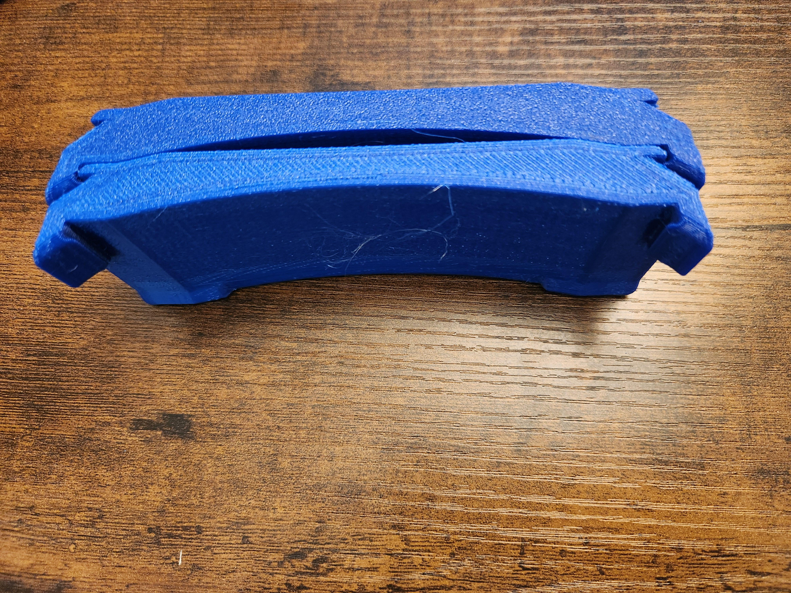
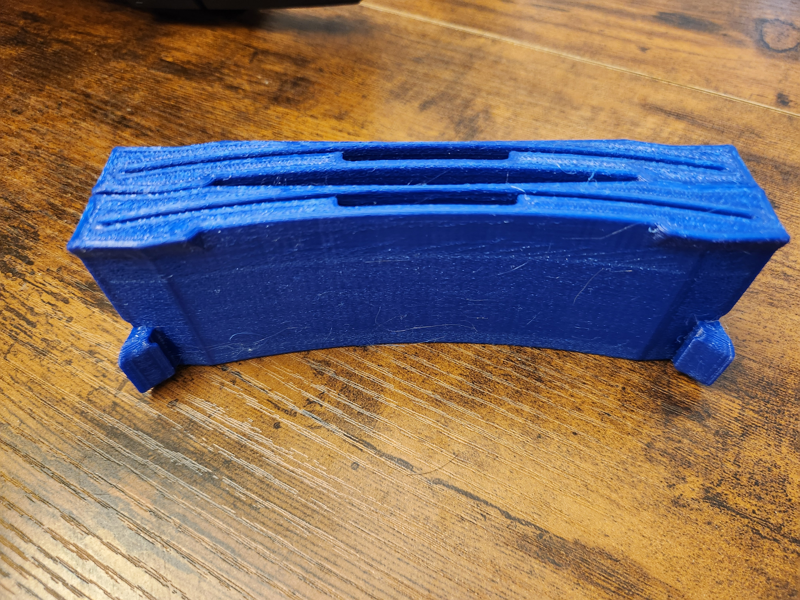
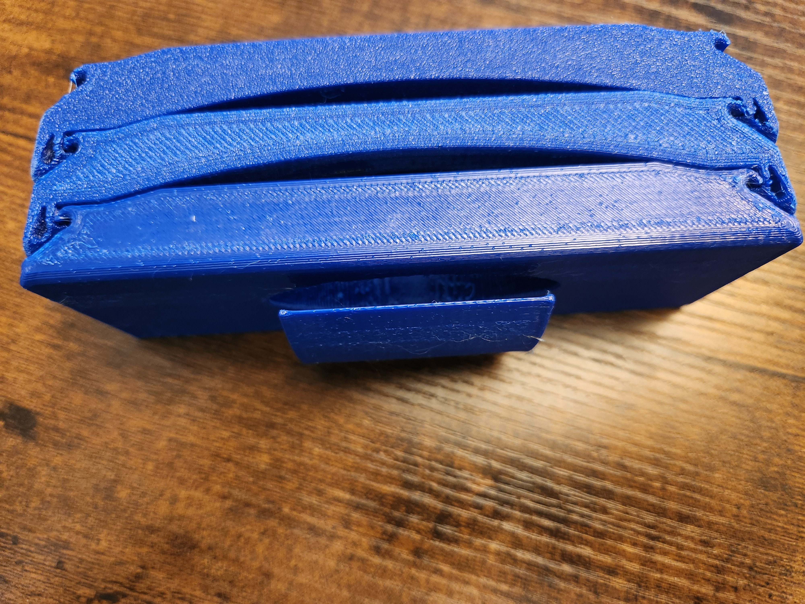
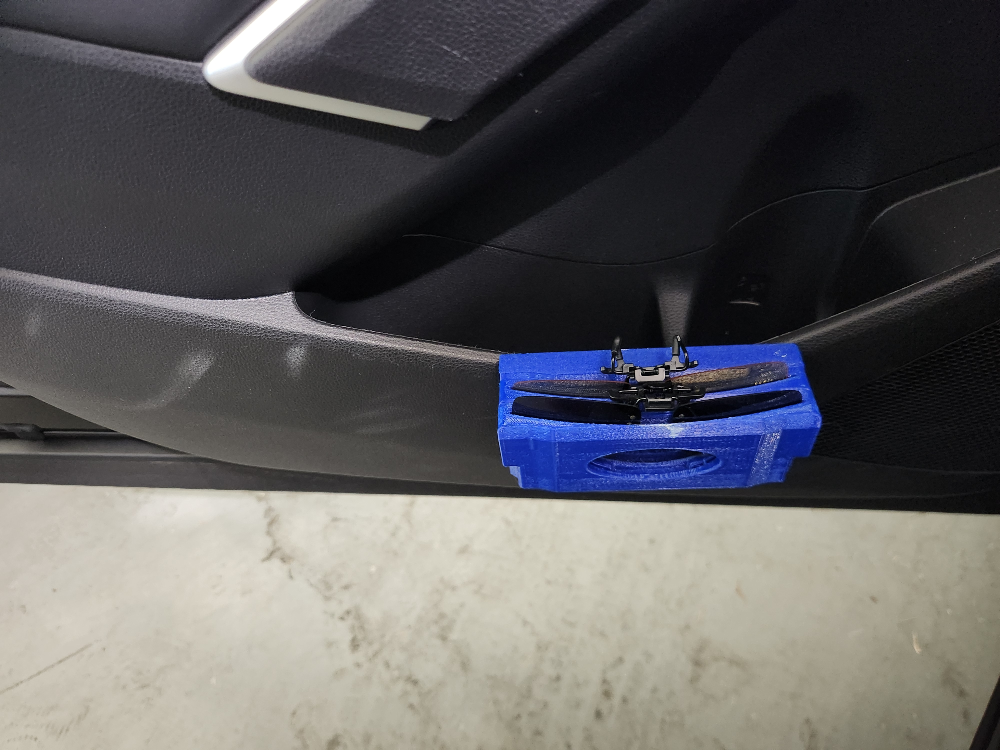
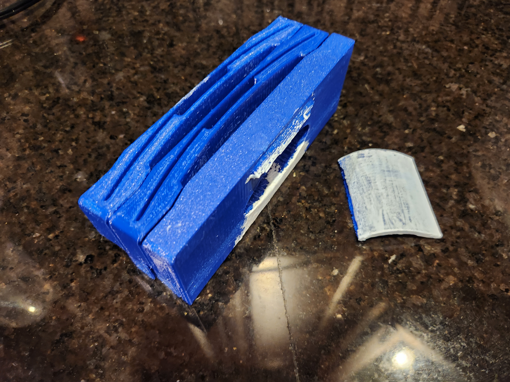

Clip-On Sunglasses Holder
Supporting files
Additional photos, video recordings, requirements, and project notes. The main case study presents the selected results; these files provide further context and design history.
Each file can be opened or downloaded individually. Expand a category to browse individual files. HEIC images may require downloading to view.
Documents (1)
Read text
Overview: Designed a modular, 3D-printed sunglasses holder for a car door pocket. A tension bracket improved retention after V1 clips occasionally slipped; the revised bracket lasted nearly two years in everyday use. Design Parameters: - Clip onto the car door pocket. - Retain clip-on sunglasses. - Fit printed parts on the print bed with minimal supports. Components: - Clip: attaches to the car door pocket. - Housing: stores glasses and connects to a clip or another housing. - V2 bracket: provides secondary retention primarily through tension. Development: Designed the modular clip, housing, and V2 retention bracket. V1 relied on the front-most holder’s own clips to connect to upstream components. V2 added a secondary tensile load path, reducing reliance on the clips’ limited interference engagement. Service History: The revised bracket lasted nearly two years before breaking in everyday use. Based on observed use and failure, I attributed increased brittleness to repeated impact, thermal, and moisture-driven expansion cycles; this assessment comes from field observations. The failure was gradual and easy to detect: the assembly became looser and the bracket came loose, without suddenly separating the mount. I considered this acceptable for this application because consequences were minor, service life was long, and replacement material cost was estimated below one cent; printing time and other costs were not included.
documents/Summary - ClipOn Sunglasses Holder.txt · 0.00 MB · Download
Media/Images (5)

media/images/v0--v1-bottom.jpg · 5.25 MB · Download

media/images/v0--v1-top.jpg · 4.49 MB · Download

media/images/v1--v1-bottom.jpg · 4.29 MB · Download

media/images/v1--v1-installed.jpg · 2.57 MB · Download

media/images/v1--v1-problem.jpg · 3.44 MB · Download


Notes (1)
Read text
# Clip-On Sunglasses Holder ## Contribution Designed the modular clip, housing, and V2 retention bracket. V1 relied on the front-most holder’s own clips to connect to upstream components. V2 added a secondary tensile load path, reducing reliance on the clips’ limited interference engagement. ## Field service and limitations The revised bracket lasted nearly two years before breaking in everyday use. Based on observed use and failure, I attributed increased brittleness to repeated impact, thermal, and moisture-driven expansion cycles; this assessment comes from field observations. The failure was gradual and easy to detect: the assembly became looser and the bracket came loose, without suddenly separating the mount. I considered this acceptable for this application because consequences were minor, service life was long, and replacement material cost was estimated below one cent; printing time and other costs were not included. ## From clip slippage to secondary tension retention Before: V1 had no bracket. The front-most holder connected to upstream components only through its own clips, which occasionally slipped when the car door opened aggressively. After: V2 added a bracket that holds the components together primarily through tension, providing secondary retention beyond the clips’ small interference engagement. ## Field service and an acceptable failure mode Before: Repeated impacts, temperature changes, and moisture-driven expansion exposed the bracket to continuous cycling. After: After nearly two years, the bracket broke. Observed brittleness was attributed to environmental and impact cycling. Low consequences, long service life, obvious looseness, and very low replacement-material cost made this failure acceptable for this personal application.
project-notes.md · 0.00 MB · Download